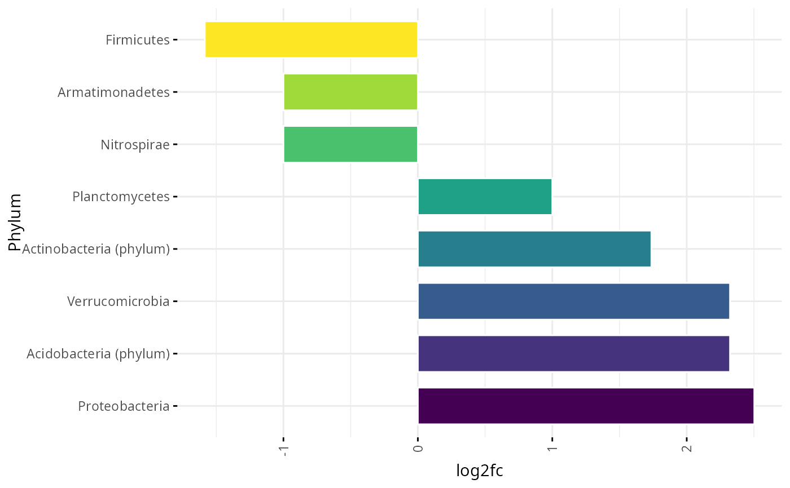

Quantifies and compares Log Fold Change value between chosen layers.
Usage
log2fc (phyl_ctr_df, control_layer, test_layer)
Arguments
- phyl_ctr_df
A data.frame preprocessed with phyl_ctr_df function.
- control_layer
"Name" of control layer.
- test_layer
"Name" of test layer.
Value
Returns a Log Fold Change plot of the centrality between layers.
Examples
library (viridis)
#> Loading required package: viridisLite
data("phyl_ctr_dstool")
log2fc (phyl_ctr_dstool, control_layer = "sample A", test_layer = "sample B")
#> Loading required package: ggpubr
